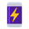

Second Wind
Look for the can button next to the chat box on ChatGPT, Claude, Gemini, Grok and more.
0
cans handed to AIs so far
Update available: v
- Download the new zip and unzip it.
- Copy everything from the new folder into your old Second Wind folder (the one with manifest.json), and pick Replace.
- Click the button below.